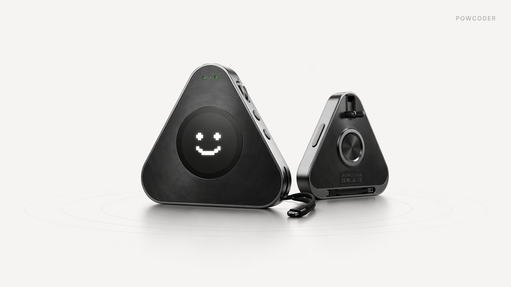

powcoder.space · 等待状态同步
灵感，不用等。
终端，正在工作。
PowCoder 是一款面向 Web 4.0 时代的 AI Agent 终端。 页面聚焦展示设备在线状态、语音对话、终端输出与 Agent 协作效果。
mode: idle
provider: PowCoder
task: idle

终端工作展示
终端、Agent、语音对话和工作链路已接入本地 PowCoder visual service 状态。
实时终端
展示设备接入、识别、调度、执行与回复链路
在线
语音对话
展示用户输入、模型回复与执行反馈
00:00
等待输入
待确认
当前 Agent
真实状态优先；未接入的角色保留原型交互
工作链路
语音输入 → 本地服务 → dispatcher → Agent 执行 → 结果返回
Session 与状态数据
左侧为最近对话与任务；右侧列出当前页面已经接入的本地接口。
- 主状态接口：
/api/state - 事件流接口：
/api/events - Session 接口：
/api/sessions - 设备主视觉资源：
assets/images/device-hero.png